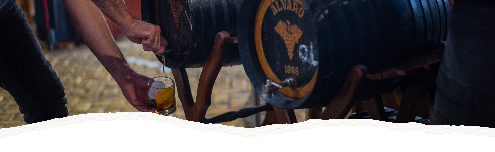
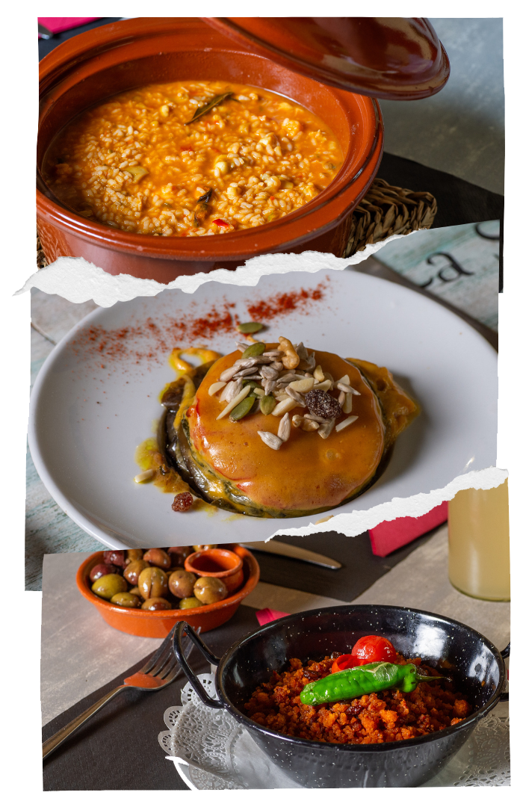
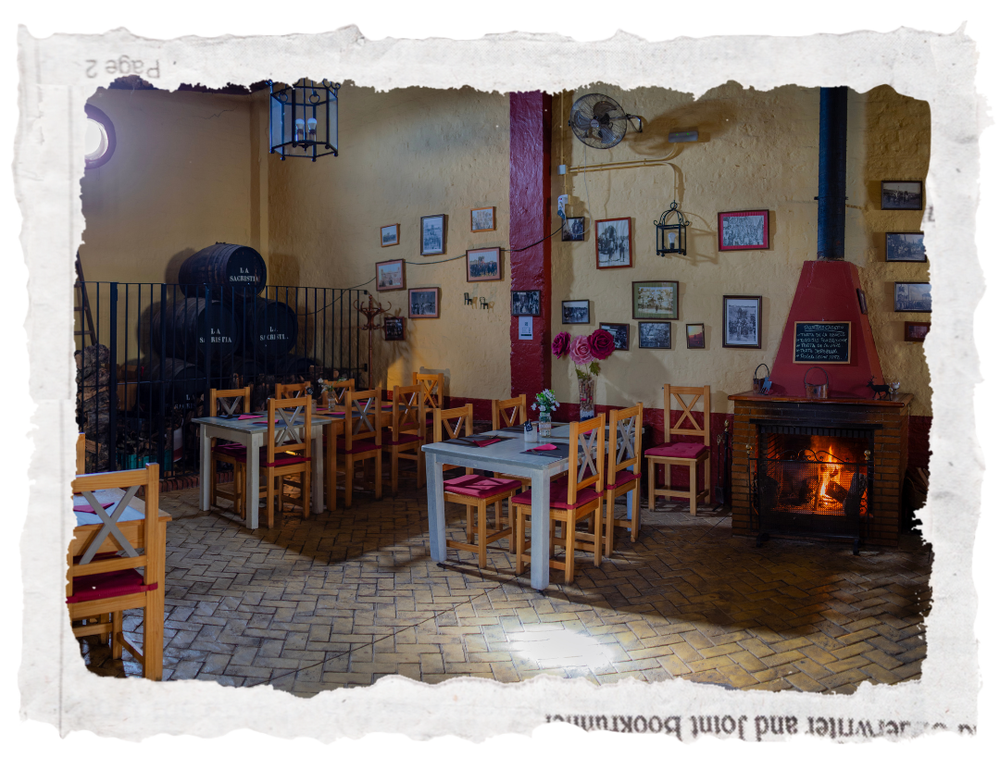

Bodega La Sacristía
Donde el sabor y la tradición se dan la mano
Tradición
y cocina
Bodega fundada en los años 50 especializada en la elaboración de mosto casero. Situada en la localidad aljarafeña de Almensilla, la cocina española te sorprenderá con una gran oferta gastronómica.

Se te hará la
boca vino
La cocina de la Sacristía se basa en una cocina española y andaluza que ofrece una gran variedad gastronómica de deliciosas comidas y bebidas. Conoce todos nuestros platos elaborados artesanalmente y con una materia prima de primera calidad.

Nuestra
Bodega
La Bodega La Sacristía es un pequeño restaurante de gran tradición culinaria localizado estratégicamente en Almensilla, uno de los pequeños pueblos señalados de la Ruta del Mosto, en la comarca del Aljarafe (Sevilla).
Esta bodega fue fundada en los años 50 y está especializada en la elaboración de mosto casero. En su historia ha sufrido numerosas idas y venidas, teniendo que cerrar a principios de los 2000 y celebrando su reapertura en 2005. A pesar de ello, La Sacristía se ha mantenido como un emblema aljarafeño todas estas décadas.
